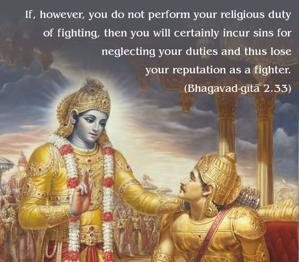
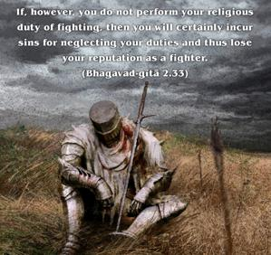
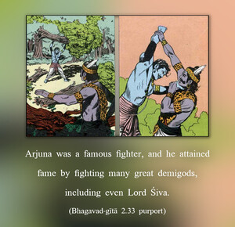

If, however, you do not perform your religious duty of fighting, then you will certainly incur sins for neglecting your duties and thus lose your reputation as a fighter.



Arjuna was a famous fighter, and he attained fame by fighting many great demigods, including even Lord Śiva. After fighting and defeating Lord Śiva in the dress of a hunter, Arjuna pleased the lord and received as a reward a weapon called pāśupata-astra. Everyone knew that he was a great warrior. Even Droṇācārya gave him benedictions and awarded him the special weapon by which he could kill even his teacher. So he was credited with so many military certificates from many authorities, including his adoptive father Indra, the heavenly king. But if he abandoned the battle, not only would he neglect his specific duty as a kṣatriya, but he would lose all his fame and good name and thus prepare his royal road to hell. In other words, he would go to hell not by fighting but by withdrawing from battle.